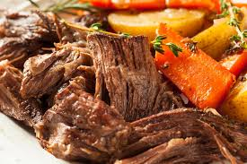

Pot Roast

Description
An American dish made by slow cooking a rough cut of beef in a savory broth until tender,
usually paired with carrots and potatoes.
Ingredients:
- 3lb chuck roast
- 3 Tbsp olive oil
- 1 white onion (sliced)
- 4 carrots (peeled and sliced)
- 4 C. beef broth
- 1 Tbsp garlic (minced)
- 1 tsp rosemary
- 1 tsp thyme
- salt
- pepper
Steps:
- Season chuck roast on all sides with salt and pepper.
- Add olive oil to pan at medium heat and sear on all sides until browned.
- Place browned roast into slow cooker and add onions and carrots.
- Add beef broth and seasoning to slow cooker.
- Cook on low temp for 7-9 hours or until beef is tender.
- Shred beef into chunks and enjoy!.
- Optional: add beef and carrots to some mashed or chunk potatoes.
- Optional: use broth from the roast to make a delicious gravy.